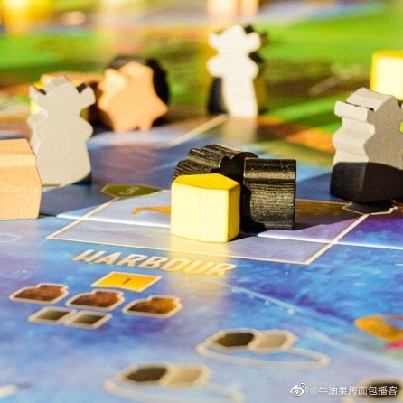

Repost@牛油果烤面包播客:最新一集播客发布了！这一集我们请来了桌游爱好者 Haipeng来侃了侃桌游。最早的桌游竟比中国的文明史还长，玩法最近才被研究出来。从传统桌游的赢者通吃输者早退，到德式桌游的通力合作所有玩家玩到最后，现代桌游也分很多种。最后还聊了聊桌游和电子游戏的相互影响。也许这一集聊到你最喜欢的桌游了呢。 网页链接
那个见彭思摘口罩的视频（上周五彭斯去参加一个和食品加工厂老板的峰会，彭斯到来之前老板们都戴着口罩。然后进来一个据说是特朗普竞选团队的人进来给说了一圈，他们都摘了口罩。之后彭斯进来了也没有戴口罩）证实了一件事：特朗普和彭斯各种不保持社交距离、不遵守CDC的遮脸建议，是一场秀。故意做给人看的。想想这件事：在美国正需要社交距离的时刻，总统副总统故意秀给大家不保持社交距离。